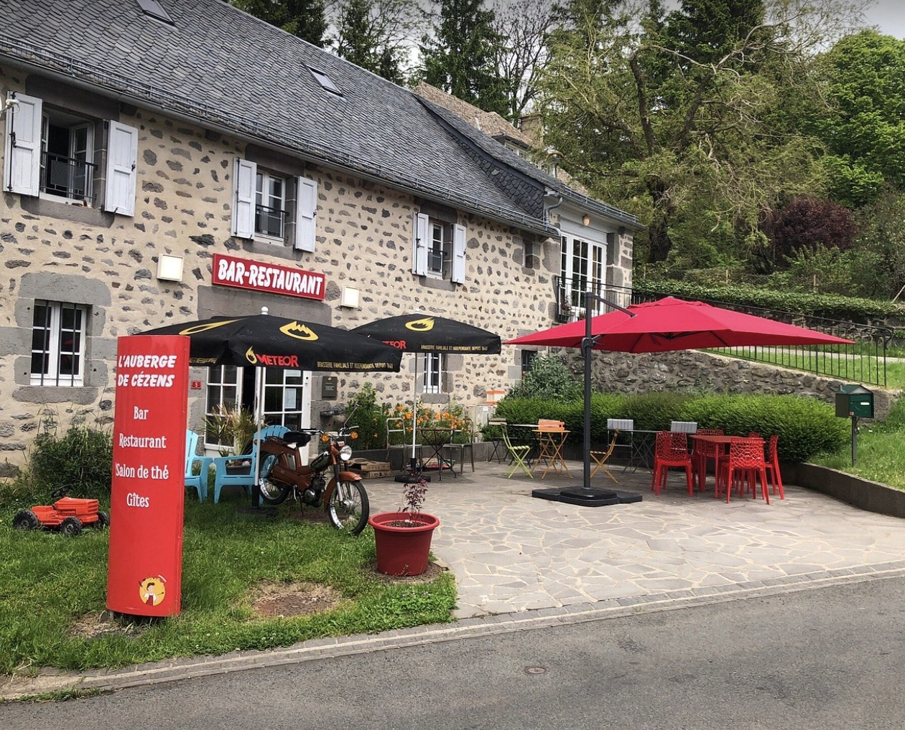

Au cœur du village
L'auberge
L'auberge
de Cézens
Reprendre l'auberge du village, c'était une évidence pour la famille Gras : offrir un lieu de partage où l'on se retrouve autour d'une cuisine franche et généreuse. Ici, pas d'artifice — l'accueil est simple, chaleureux, à l'image du plateau de l'Aubrac.
- Esprit convivial — Une table où l'on prend le temps, entre habitués et voyageurs de passage
- Ambiance de village — Au cœur de Cézens, dans un cadre authentique et sans façon
- Une histoire de famille — La même exigence, de l'élevage jusqu'à l'assiette